Uni-Pal — Stay Nourished, Stay Connected
Role: UX Design Lead · 5-person team · UXDG 101 Winner — European Product Design Award 2025 (Student · Beverage & Food)

Overview
College students skip meals, blow food budgets, and eat alone — not for lack of caring, but for lack of time. Uni-Pal is a mobile app that helps students find affordable food near campus, plan meals with friends, and build consistent eating habits. As UX Design Lead on a five-person team, I shaped the core flows and wireframes from our research with students and faculty. The project won a 2025 European Product Design Award (Student — Beverage & Food).
Problem & hypothesis
University students often struggle to find budget-friendly, accessible meals and to connect consistently with friends. With large workloads, intense schedules, and high stress, they prioritize studies over basic needs — impacting both social and physical well-being.
Our bet: an app that combines affordable food discovery, meal planning with friends, and habit tracking could turn eating well from one more obligation into something that fits student life.
Research
We used five methods to understand the problem before designing anything: secondary research, day-in-the-life studies, town watching, interviews, and a survey.
What we heard, in students' own words:
"Usually, if I don't have time, I'll skip meals." — Jonah, student
"Transparency is a necessary factor for dietary health, especially in a learning environment." — N'Keyma Lee, faculty
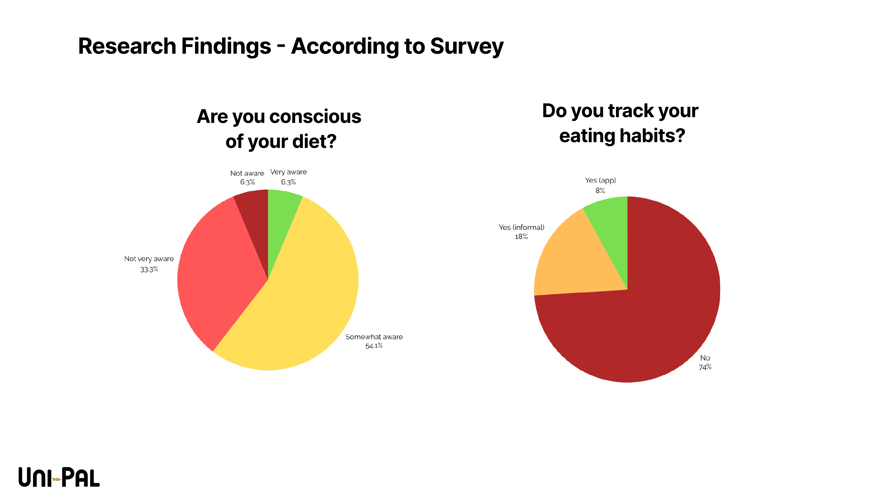
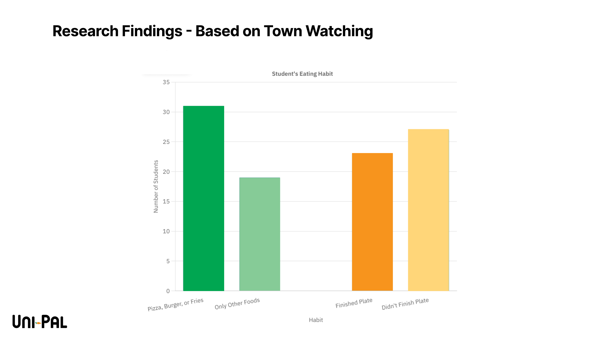
Insights → How Might We
Our research clustered into eight key insights — students prioritize convenience over health, eat efficiently through the day, live on budgets, avoid healthy dining-hall options, eat alone more than they'd like, want structure, and struggle with time management — and those insights produced four design questions:
- How might we help students efficiently access healthy, cost-effective food?
- How might we connect users with friends?
- How might we create balanced eating schedules?
- How might we educate students on dietary health?
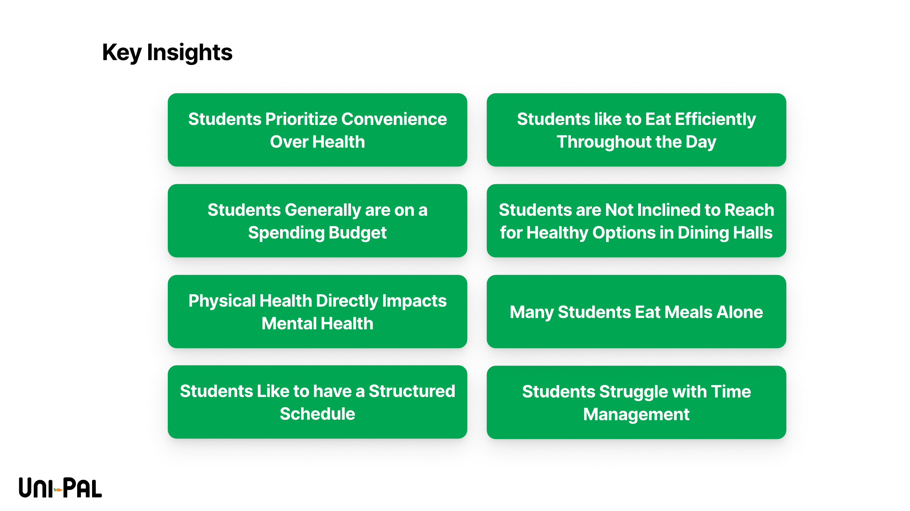
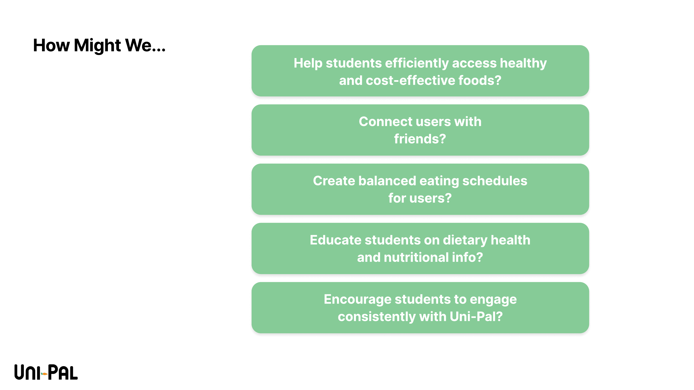
Who we designed for
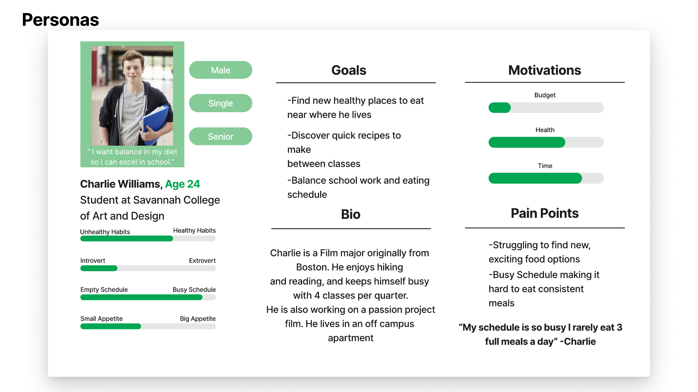
Charlie carries the research: a busy senior on a budget who wants to eat better but loses the fight to his schedule. His motivations (time and health over budget) and pain points anchored every prioritization call we made.
Brand & identity
Uni-Pal's identity is warm on purpose — a rounded wordmark, a carrot as the brand mark, and a palette of greens and golds that reads friendly rather than clinical. The tagline carries the two-sided promise: Stay Nourished, Stay Connected.
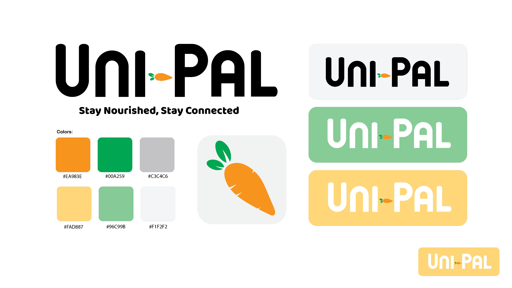
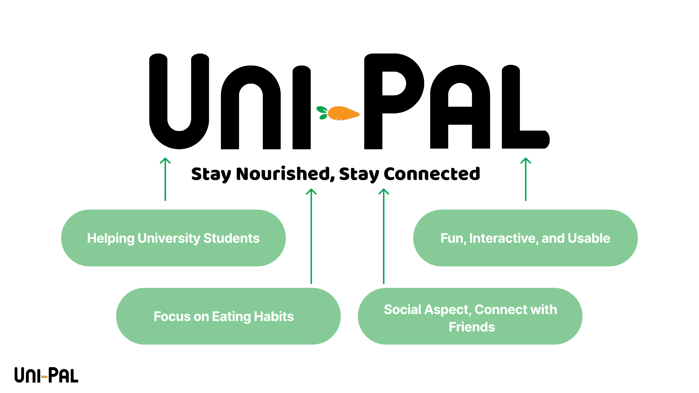
From wireframe to final
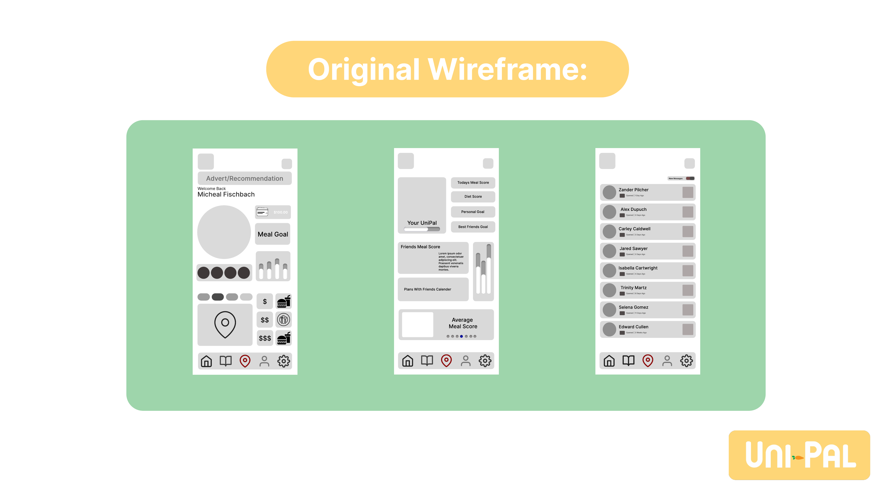
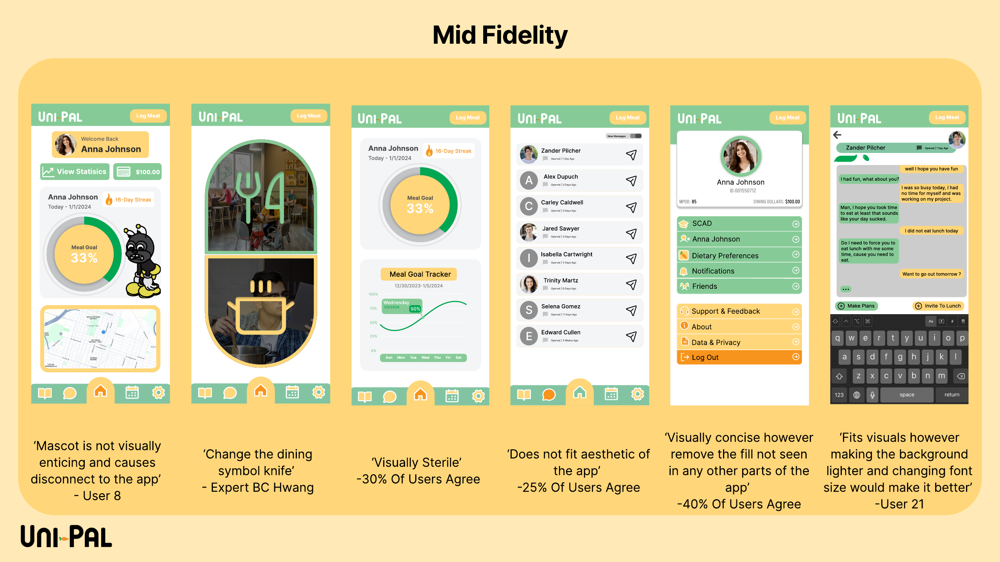
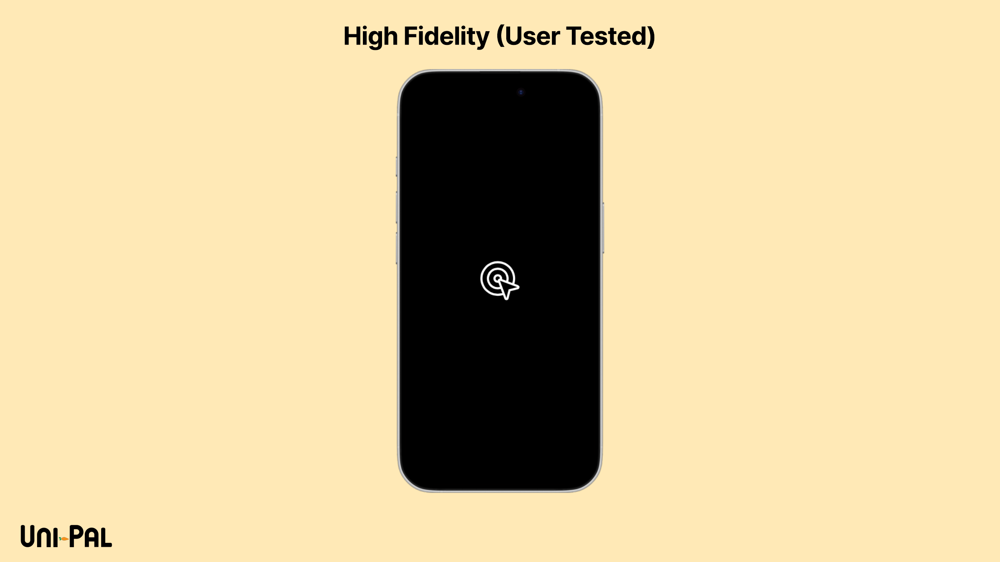
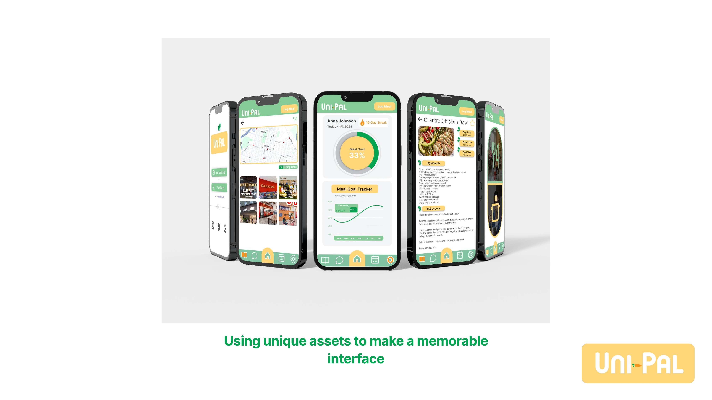
Between wireframe and final, the structure tightened around three core flows: logging meals against a visible goal, discovering nearby affordable dining, and cooking from quick student-friendly recipes. The final interface leans on custom illustrated assets to make the experience memorable rather than template-generic.
Testing
We tested in two layers. A broad feedback pass with 30 users produced 75 discrete observations — roughly two-thirds positive, one-third critical — and the critical third drove the refinement pass between wireframes and final UI. Alongside it, we ran moderated SUS sessions on the prototype, averaging a 78.75 System Usability Scale score.
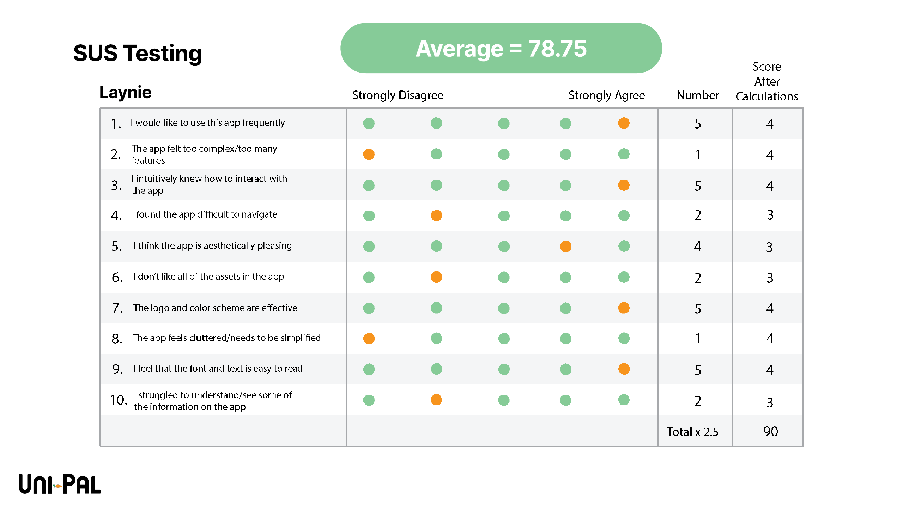
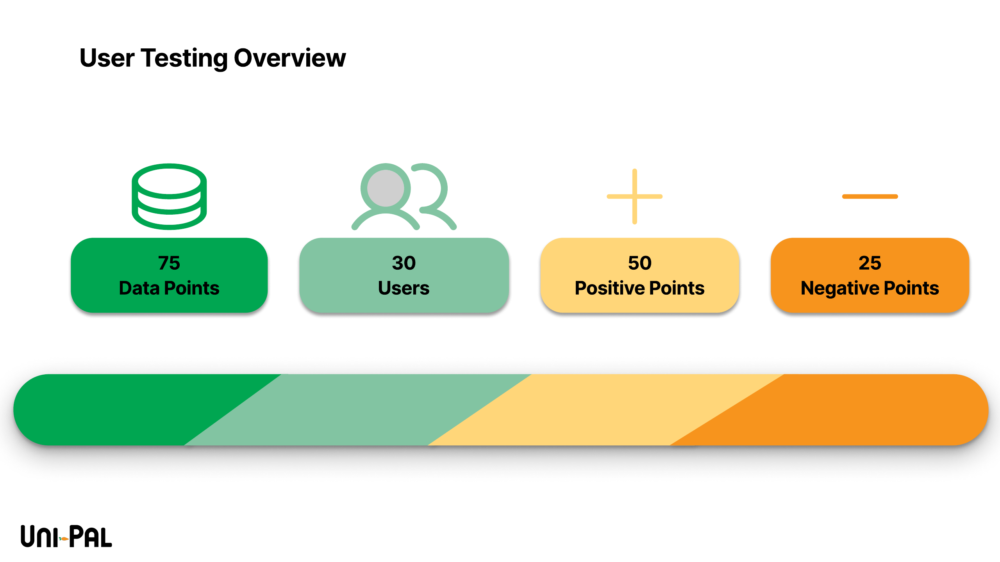
Recognition
Uni-Pal won the European Product Design Award 2025 in the Student — Beverage & Food category, judged against an international field of student entries.
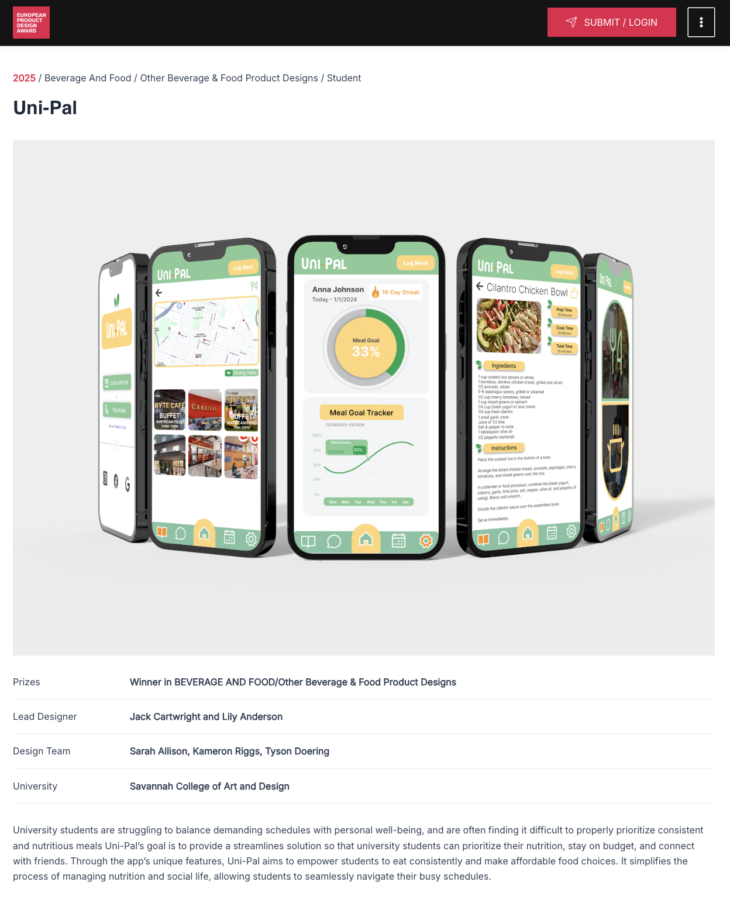
My role
As UX Design Lead on a five-person team, I was accountable for how the app worked — the user flows, screen structure, and wireframes that carried us from research to final UI. Like most of this project, the work was shared: the whole team took part in research, design, and testing, with creative direction led by our Creative Director. I was most hands-on in shaping the core flows and wireframes and in the research that informed them.
Reflection
Uni-Pal taught me research breadth — five methods, real participants, and an insight-to-question discipline I still use — and gave me my first SUS benchmarking experience. What I'd deepen is instrumentation: our sessions captured scores and impressions, but not the per-task timing and interaction data that pinpoint where a design fails. That's exactly what I added in my next project, where testing measured task time and tap counts alongside SUS. Seen together, the two projects are my growth arc in miniature.